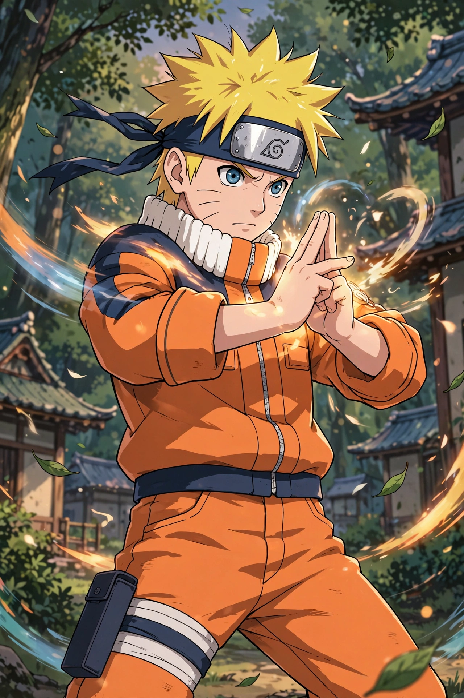

From Wikipedia, the free encyclopedia
| Genre | Adventure, fantasy, martial arts |
|---|---|
| Created by | Masashi Kishimoto |
| Published by | Shueisha |
| Magazine | Weekly Shōnen Jump |
| Original run | September 21, 1999 – November 10, 2014 |
| Volumes | 72 |

Naruto (Japanese: NARUTO) is a Japanese manga series written and illustrated by Masashi Kishimoto. It tells the story of Naruto Uzumaki, a young ninja who seeks recognition from his peers and dreams of becoming the Hokage, the leader of his village. The story is told in two parts: the first set in Naruto's pre-teen years (volumes 1–27), and the second in his teens (volumes 28–72).
Naruto was serialized in Shueisha's shōnen manga magazine Weekly Shōnen Jump from September 1999 to November 2014, with its chapters collected in 72 tankōbon volumes. The manga was adapted into two anime television series by Pierrot and Aniplex, which ran from 2002 to 2017.
Twelve years before the start of the series, the Nine-Tailed Demon Fox attacked the ninja village of Konohagakure (the Village Hidden in the Leaves). The village leader, the Fourth Hokage, sacrificed his life to seal the beast inside his newborn son, Naruto Uzumaki. Ostracized by the villagers, Naruto grows up seeking acknowledgment and is placed on a team with Sasuke Uchiha and Sakura Haruno under the teacher Kakashi Hatake. The second part, set two and a half years later, follows an older Naruto confronting the criminal organization Akatsuki and the threat of a Fourth Great Ninja War.
Naruto is one of the best-selling manga series in history, with over 250 million copies in circulation worldwide. It became one of Viz Media's best-selling manga series in North America and helped popularize anime and manga internationally. A sequel series, Boruto, follows Naruto's son.